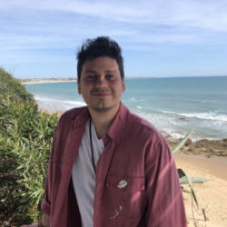
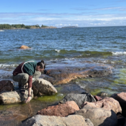
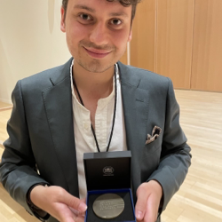
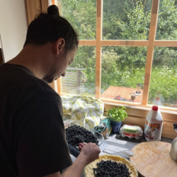
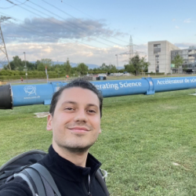
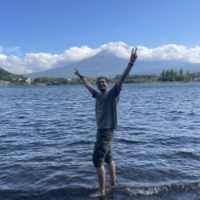
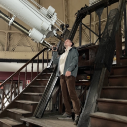

About Me
I grew up in a peaceful small town in Normandy, a region in France famed for its cheese and apple-based spirits. I studied mostly in Paris, although I was fortunate enough to also experience student life in Cambridge and spend a year meandering along the canals of Amsterdam. I am now living my best life in Munich.
Outside of work, you'll often find me running, on the road or exploring mountain trails. I'm a beer enthousiast and feel most at home in nature. When it comes to music, I thrive on techno trance blended with psychedelic didgeridoo sounds, but be sure I also enjoy the classics.
I'm lucky to share my life with my incredible Finnish partner—the sunshine of my world.






